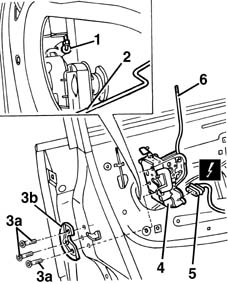

7005C66 front side door safety catch link r r with door panel removed
- Path
- Procedures > 70 FITTINGS > 7005 PASSENGER COMPARTMENT FRONT SIDE DOORS > 7005C front lock controls > 7005C66 front side door safety catch link r r with door panel removed
- Kind
- repair procedure (removal / refitting; the operation number is the code)
- Applies to
- all engines; all production periods
- Interactive page
- https://sloeber94.github.io/elrnDB-fMltpl/en/#/2892029
Applies to: all engines; all production periods
 Removing
Removing
 Refitting
Refitting7005A04 front side door water guard protection - r r or replace with door panel removed
7005D22 front side door descending window glass guide (one) - r r with door panel (and support frame) removed (rear guide)
1. Disconnect, from the lock side, the linkage which connects to the outer handle.
2. Disconnect, from the lock side, the inner opening linkage.
3. Undo the bolts (3a) securing the lock and collect the plate (3b).
4. Move the lock slightly.
5. Disconnect the electrical connection, then remove the lock.
 | Name | Connector |
|---|---|---|
5 | Front door lock gear motor left |
| Name | Connector |
|---|---|---|
5 | Front door lock gear motor right |
6. Disconnect the safety device linkage from the lock.

Applies to: all engines; all production periods
Refitting
RemovingCheck that the linkage is undamaged.
Connect the linkage to the lock.
Connect the electrical connection to the lock.
Fit the lock.
Fit the plate and tighten the bolts.
 | Fastening | Component | Ø | Value (daNm) |
|---|---|---|---|---|
- | Bolt | FRONT DOOR LOCK MECHANISM | M8 | 1.8 - 2.7 |
Connect, on the lock side, the linkage connecting to the outer handle and the inner opening linkage.
Check that the linkage is working and that the lock locks and unlocks.
7005D22 front side door descending window glass guide (one) - r r with door panel (and support frame) removed (rear guide)
7005A04 front side door water guard protection - r r or replace with door panel removed
Topics linked from this page (4)
- 7005A04 front side door water guard protection - r r or replace with door panel removed
- 7005D22 front side door descending window glass guide (one) - r r with door panel (and support frame) removed
- N50 Front door lock gear motor left
- N51 Front door lock gear motor right